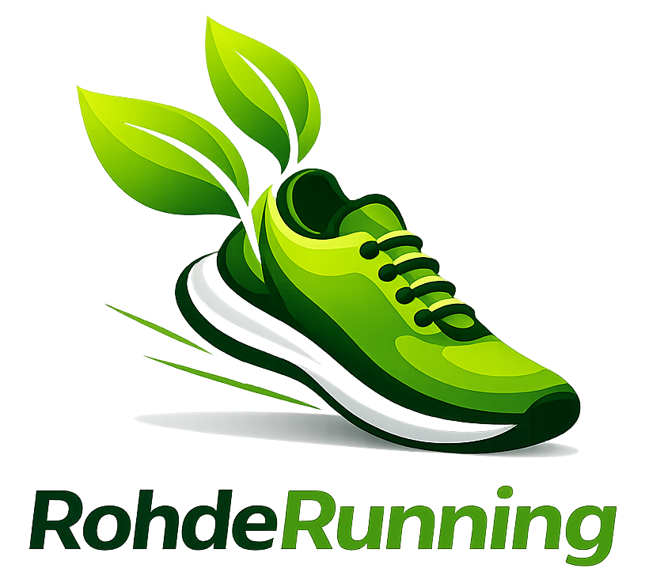

RohdeRunning – Endurance Project
Road to a faster 100 miles
Planlagt km
120
Mål
120
Faktisk km
51.3
Status
✅ OK
Progress
Aktuel uge
| Dag | Plan km | Faktisk km | Type | Styrke | Mobilitet |
|---|---|---|---|---|---|
| 1 | 15 | 15.3 | Easy run | Ja | NA |
| 2 | 20 | 22.94 | Kvalitet | NA | NA |
| 3 | 12 | 13.1 | Easy run | NA | Ja |
| 4 | 16 | NA | Kvalitet | NA | NA |
| 5 | 12 | NA | Easy run | NA | NA |
| 6 | 30 | NA | Langtur | Ja | NA |
| 7 | 15 | NA | Easy run | NA | Ja |
Træningstyper
Easy run
Kvalitet
Langtur
Easy: Z2 volumen ·
Kvalitet: Z4 tempo/intervaller ·
Langtur: rolig udholdenhed
Overordnet plan
Progress i blok
| Aktuel | Uge | Start | Fase | Km | KS1 | KS2 | Long/B2B | Fast |
|---|---|---|---|---|---|---|---|---|
| ➡️ | 15 | 06-04-2026 | Base | 120 | Tempo 20 km (10 km Z4) | Steady 16 km (Z3) | Long 30-40 km | Ja (sidste 25% Z3→Z4) |
| 16 | 13-04-2026 | Base | 130 | Tempo 22 km (12 km Z4) | Steady 18 km (Z3) | Long 30-40 km | Nej | |
| 17 | 20-04-2026 | Base | 140 | Progression 24 km (slut Z4) | Steady 16 km (Z3) | B2B 40+25 km | Nej | |
| 18 | 27-04-2026 | Base | 150 | Tempo 20 km (10 km Z4) | Steady 18 km (Z3) | Long 30-40 km | Ja (sidste 25% Z3→Z4) | |
| 19 | 04-05-2026 | Recovery | 105 | Progression 16 km (slut Z3) | Steady 12 km (Z3) | Long 22-26 km | Nej |
📅 Vis hele træningsplanen
| Aktuel | Uge | Start | Fase | Km | KS1 | KS2 | Long/B2B | Fast |
|---|---|---|---|---|---|---|---|---|
| ➡️ | 15 | 06-04-2026 | Base | 120 | Tempo 20 km (10 km Z4) | Steady 16 km (Z3) | Long 30-40 km | Ja (sidste 25% Z3→Z4) |
| 16 | 13-04-2026 | Base | 130 | Tempo 22 km (12 km Z4) | Steady 18 km (Z3) | Long 30-40 km | Nej | |
| 17 | 20-04-2026 | Base | 140 | Progression 24 km (slut Z4) | Steady 16 km (Z3) | B2B 40+25 km | Nej | |
| 18 | 27-04-2026 | Base | 150 | Tempo 20 km (10 km Z4) | Steady 18 km (Z3) | Long 30-40 km | Ja (sidste 25% Z3→Z4) | |
| 19 | 04-05-2026 | Recovery | 105 | Progression 16 km (slut Z3) | Steady 12 km (Z3) | Long 22-26 km | Nej | |
| 20 | 11-05-2026 | Opbygning | 135 | Progression 24 km (slut Z4) | Steady 18 km (Z3) | B2B 40+25 km | Nej | |
| 21 | 18-05-2026 | Opbygning |Test løb | 145 | Tempo 20 km (10 km Z4) | Steady 16 km (Z3) | Testløb 50-60 km (aldrig over Z3) | Nej | |
| 22 | 25-05-2026 | Opbygning | 150 | Tempo 22 km (12 km Z4) | Steady 18 km (Z3) | Long 30-40 km | Nej | |
| 23 | 01-06-2026 | Opbygning | 140 | Progression 24 km (slut Z4) | Steady 16 km (Z3) | B2B 40+25 km | Nej | |
| 24 | 08-06-2026 | Recovery | 110 | Progression 16 km (slut Z3) | Steady 12 km (Z3) | Long 22-26 km | Nej | |
| 25 | 15-06-2026 | Specifik | 145 | Tempo 22 km (12 km Z4) | Steady 16 km (Z3) | Long 30-40 km | Ja (sidste 25% Z3→Z4) | |
| 26 | 22-06-2026 | Specifik | 155 | Progression 24 km (slut Z4) | Steady 18 km (Z3) | B2B 40+25 km | Nej | |
| 27 | 29-06-2026 | Specifik | Test løb | 150 | Tempo 20 km (10 km Z4) | Steady 16 km (Z3) | Testløb 70-80 km (aldrig over Z3) | Nej | |
| 28 | 06-07-2026 | Specifik | 140 | Tempo 22 km (12 km Z4) | Steady 18 km (Z3) | Long 30-40 km | Ja (sidste 25% Z3→Z4) | |
| 29 | 13-07-2026 | Recovery | 95 | Progression 16 km (slut Z3) | Rolig 12 km (Z2) | Long 22-26 km | Nej | |
| 30 | 20-07-2026 | Ferie | Peak | 135 | Let tempo 10 km (Z3) | Rolig 12 km (Z2) | Lang 20-25 km | Nej | |
| 31 | 27-07-2026 | Ferie | Peak | 140 | Let tempo 10 km (Z3) | Rolig 12 km (Z2) | Lang 20-25 km | Ja (sidste 25% Z3→Z4) | |
| 32 | 03-08-2026 | Ferie | Peak | 150 | Progression 24 km (slut Z4) | Steady 18 km (Z3) | B2B 40+25 km | Nej | |
| 33 | 10-08-2026 | Recovery | 110 | Progression 16 km (slut Z3) | Steady 12 km (Z3) | Long 22-26 km | Nej | |
| 34 | 17-08-2026 | Taper | 90 | Short tempo 14 km | Easy steady | Long 30-40 km | Nej | |
| 35 | 24-08-2026 | Taper | 70 | Short tempo 10 km | Easy runs | Long 18–22 km | Nej | |
| 36 | 31-08-2026 | Taper | 50 | Short runs | Strides | Long 12 km | Nej | |
| 37 | 07-09-2026 | Race week | 30 | Easy runs | Strides | 100 miles race | NA |
Ugens progression